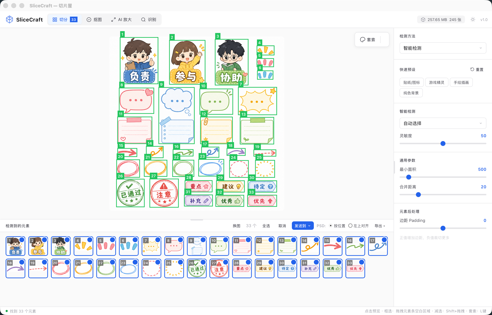
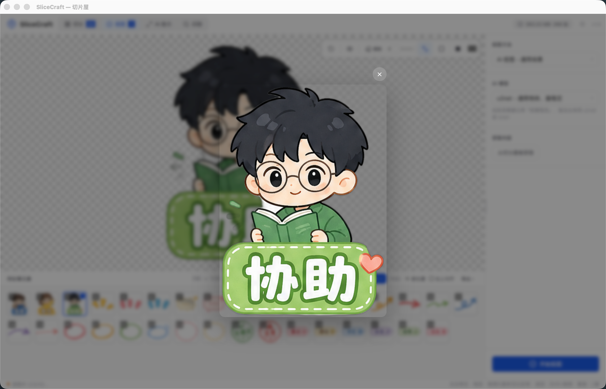
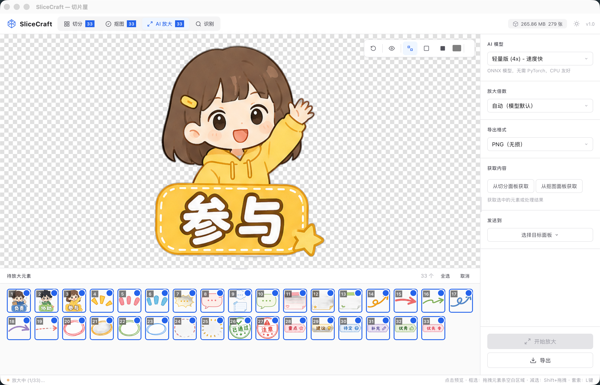
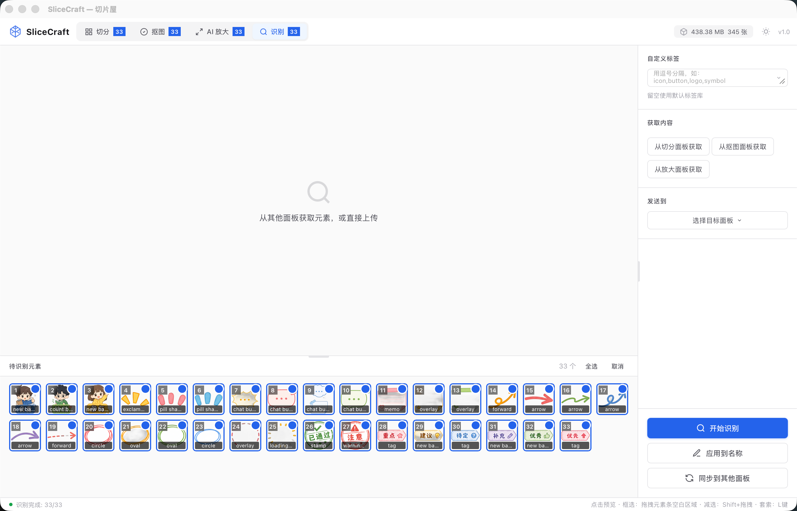

切分
检测、套索、命名，生成唯一素材源。
SliceCraft 用纯本地模型处理截图，把切分、抠图、放大、识别结果写回同一批元素，不上传云端，也不消耗大模型 tokens。
本地流程
每个 tab 只负责处理同一批元素的不同结果，本地后端跑模型，不再复制列表、不再手动同步。
检测、套索、命名，生成唯一素材源。
AI、泛洪、吸管结果写入抠图结果。
高清版本写入放大结果，可再次作为输入。
标签变成全局名称和导出文件名。
元素数据源
一个元素同时保存原始切片、抠图结果、放大结果和识别标签；默认最新结果优先使用放大，其次抠图，最后原始切片。
切分面板固定原始元素，后续 tab 不再各自生成孤立列表。
先抠图再放大、先放大再抠图都写回同一个元素对象。
识别 tab 改名后，切分和导出文件名同步变化。
原始切片、抠图结果、放大结果、最新结果都能导出。
抠图、放大、识别走本地模型，适合 Docker 或 NAS 内网部署。
界面截图
真实产品截图只放在这一页，其他部分用手绘动画解释流程，避免页面变成截图堆叠。

生成唯一元素清单。

写入抠图结果。

写入放大结果。

标签同步到全局名称。
导出交付
导出继续使用同一批元素，PSD 使用原始坐标，PNG/ZIP 使用全局名称，适合本地批量交付。
选择来源，按当前选择导出；部署在本地服务或 Docker 容器里也能跑完整流程。
透明单图。
批量打包。
保留图层位置。
自动取最新结果。
落地页是单文件，应用入口仍是 frontend/index.html。后端可用本地模型和 Docker 部署，减少云端传图和大模型 token 成本。